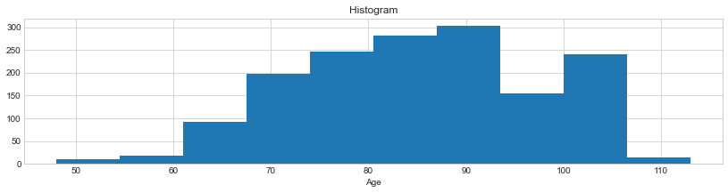
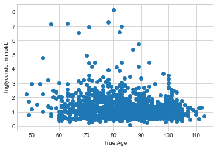
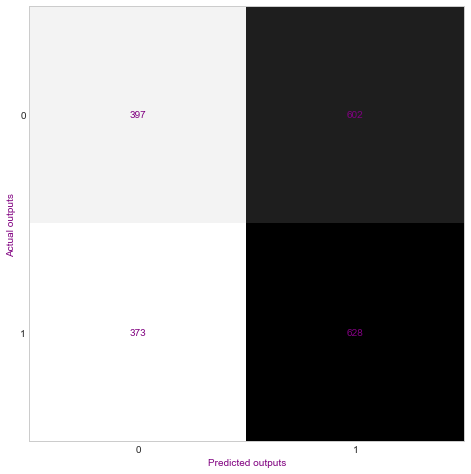

Model Design and Logistic Regression in Python
Justin Napolitano
2022-06-17 13:20:32.169 +0000 UTC
Table of Contents
Model Design and Logistic Regression in Python
I recently modeled customer churn in Julia with logistic regression model. It was interesting to be sure, but I want to extend my analysis skillset by modeling biostatistics data. In this post, I design a logistic regression model of health predictors.
Imports
# load some default Python modules
import numpy as np
import pandas as pd
import matplotlib.pyplot as plt
import seaborn as sns
plt.style.use('seaborn-whitegrid')
from google.cloud import bigquery
from pprint import pprint
from datetime import date, datetime
import contextily as cx
import matplotlib.pyplot as plt
from sklearn.datasets import load_digits
from sklearn.linear_model import LogisticRegression
from sklearn.metrics import classification_report, confusion_matrix
from sklearn.model_selection import train_test_split
from sklearn.preprocessing import StandardScaler
Data Import
include a raw html here to include the project description data file in the final markdown document
Data Description
Chinese Longitudinal Healthy Longevity Survey (CLHLS), Biomarkers Datasets, 2009, 2012, 2014 (ICPSR 37226) Principal Investigator(s): Yi Zeng, Duke University, and Peking University; James W. Vaupel, Max Planck Institutes, and Duke University
filename = "/Users/jnapolitano/Projects/nih/ICPSR_37226/DS0003/pmc-submission/jupyter-book/notebooks/37226-0003-Data.tsv"
df = pd.read_csv(filename, sep='\t')
# read data in pandas dataframe
# list first few rows (datapoints)
df.head()
| ID | TRUEAGE | A1 | ALB | GLU | BUN | CREA | CHO | TG | GSP | ... | RBC | HGB | HCT | MCV | MCH | MCHC | PLT | MPV | PDW | PCT | |
|---|---|---|---|---|---|---|---|---|---|---|---|---|---|---|---|---|---|---|---|---|---|
| 0 | 32160008 | 95 | 2 | 30.60000038147 | 4.230000019073 | 6.860000133514 | 64.90000152588 | 3.5 | .8799999952316 | 232.89999389649 | ... | 3.5 | 104 | 29.14999961853 | 82.69999694825 | 29.5 | 357 | 394 | 8.60000038147 | 14.30000019074 | .33000001311 |
| 1 | 32161008 | 95 | 2 | 39.09999847413 | 6.94000005722 | 16.190000534058 | 152.39999389649 | 4.619999885559 | 1.2799999713898 | 264.20001220704 | ... | 3.2999999523163 | 101.3000030518 | 28.930000305176 | 88.90000152588 | 31.10000038147 | 350 | 149 | 9.10000038147 | 15 | .12999999523 |
| 2 | 32162608 | 87 | 2 | 44.79999923707 | 5.550000190735 | 5.679999828339 | 78.5 | 5.199999809265 | 2.3900001049042 | 276.20001220704 | ... | 3.5999999046326 | 111.3000030518 | 31.159999847412 | 87.59999847413 | 31.29999923707 | 357 | 201 | 8.30000019074 | 12 | .15999999642 |
| 3 | 32163008 | 90 | 2 | 41.29999923707 | 5.269999980927 | 5.949999809265 | 75.80000305176 | 4.25 | 1.5499999523163 | 264.20001220704 | ... | 3.7000000476837 | 113.9000015259 | 32.900001525879 | 89.69999694825 | 31.10000038147 | 346 | 150 | 9.89999961854 | 16.79999923707 | .1400000006 |
| 4 | 32164908 | 94 | 2 | 39.90000152588 | 7.05999994278 | 6.039999961853 | 90.80000305176 | 7.139999866486 | 2.3399999141693 | 237.69999694825 | ... | 4.1999998092651 | 131.1999969483 | 36.689998626709 | 88.5 | 31.60000038147 | 358 | 163 | 9.69999980927 | 17.79999923707 | .15000000596 |
5 rows × 33 columns
df.describe()
| ID | |
|---|---|
| count | 2.546000e+03 |
| mean | 4.069177e+07 |
| std | 4.367164e+06 |
| min | 3.216001e+07 |
| 25% | 3.743344e+07 |
| 50% | 4.135976e+07 |
| 75% | 4.430106e+07 |
| max | 4.611231e+07 |
df.columns
Index(['ID', 'TRUEAGE', 'A1', 'ALB', 'GLU', 'BUN', 'CREA', 'CHO', 'TG', 'GSP',
'CRPHS', 'UA', 'HDLC', 'SOD', 'MDA', 'VD3', 'VITB12', 'UALB', 'UCR',
'UALBBYUCR', 'WBC', 'LYMPH', 'LYMPH_A', 'RBC', 'HGB', 'HCT', 'MCV',
'MCH', 'MCHC', 'PLT', 'MPV', 'PDW', 'PCT'],
dtype='object')
# check datatypesdf
df.dtypes
ID int64
TRUEAGE object
A1 object
ALB object
GLU object
BUN object
CREA object
CHO object
TG object
GSP object
CRPHS object
UA object
HDLC object
SOD object
MDA object
VD3 object
VITB12 object
UALB object
UCR object
UALBBYUCR object
WBC object
LYMPH object
LYMPH_A object
RBC object
HGB object
HCT object
MCV object
MCH object
MCHC object
PLT object
MPV object
PDW object
PCT object
dtype: object
Everything was read an object. Blah. I’ll cast everything to numeric… Thank you numpy
# replace empty space with na
df = df.replace(" ", np.nan)
# convert numeric objects to numeric data types. I checked in the code book there will not be any false positives
df = df.apply(pd.to_numeric, errors='raise')
# Recheck dictypes
df.dtypes
ID int64
TRUEAGE float64
A1 float64
ALB float64
GLU float64
BUN float64
CREA float64
CHO float64
TG float64
GSP float64
CRPHS float64
UA float64
HDLC float64
SOD float64
MDA float64
VD3 float64
VITB12 float64
UALB float64
UCR float64
UALBBYUCR float64
WBC float64
LYMPH float64
LYMPH_A float64
RBC float64
HGB float64
HCT float64
MCV float64
MCH float64
MCHC float64
PLT float64
MPV float64
PDW float64
PCT float64
dtype: object
# check statistics of the features
df.describe()
| ID | TRUEAGE | A1 | ALB | GLU | BUN | CREA | CHO | TG | GSP | ... | RBC | HGB | HCT | MCV | MCH | MCHC | PLT | MPV | PDW | PCT | |
|---|---|---|---|---|---|---|---|---|---|---|---|---|---|---|---|---|---|---|---|---|---|
| count | 2.546000e+03 | 2542.000000 | 2542.000000 | 2499.000000 | 2499.000000 | 2499.000000 | 2499.000000 | 2499.000000 | 2499.000000 | 2499.000000 | ... | 2497.000000 | 2497.000000 | 2497.000000 | 2497.000000 | 2497.000000 | 2497.000000 | 2497.000000 | 2487.000000 | 2483.000000 | 1711.000000 |
| mean | 4.069177e+07 | 85.584972 | 1.543273 | 42.363345 | 5.364794 | 6.661321 | 82.805642 | 4.770340 | 1.251369 | 253.726811 | ... | 4.165012 | 127.684902 | 38.664654 | 94.532295 | 31.033849 | 323.221826 | 195.033440 | 9.322951 | 16.114692 | 0.244237 |
| std | 4.367164e+06 | 12.061941 | 0.498222 | 4.367372 | 1.802363 | 2.355459 | 29.246926 | 1.010844 | 0.757557 | 38.658243 | ... | 0.602123 | 33.852642 | 7.163306 | 7.624568 | 11.041158 | 20.995983 | 76.322382 | 4.468129 | 4.264532 | 2.679986 |
| min | 3.216001e+07 | 47.000000 | 1.000000 | 21.900000 | 1.960000 | 2.090000 | 30.500000 | 0.070000 | 0.030000 | 139.899994 | ... | 1.910000 | 13.000000 | 0.280000 | 54.799999 | 15.900000 | 3.900000 | 9.000000 | 0.000000 | 5.500000 | 0.020000 |
| 25% | 3.743344e+07 | 76.000000 | 1.000000 | 40.000000 | 4.400000 | 5.150000 | 66.599998 | 4.090000 | 0.800000 | 232.600006 | ... | 3.780000 | 115.000000 | 35.400002 | 91.300003 | 29.500000 | 317.000000 | 150.000000 | 8.200000 | 15.300000 | 0.140000 |
| 50% | 4.135976e+07 | 86.000000 | 2.000000 | 42.799999 | 5.020000 | 6.380000 | 77.000000 | 4.690000 | 1.050000 | 248.800003 | ... | 4.160000 | 127.000000 | 39.000000 | 95.400002 | 31.200001 | 325.000000 | 189.000000 | 9.300000 | 16.000000 | 0.170000 |
| 75% | 4.430106e+07 | 95.000000 | 2.000000 | 45.000000 | 5.790000 | 7.695000 | 92.099998 | 5.370000 | 1.470000 | 266.899994 | ... | 4.540000 | 140.000000 | 42.700001 | 98.900002 | 32.500000 | 333.000000 | 229.000000 | 10.300000 | 16.799999 | 0.210000 |
| max | 4.611231e+07 | 113.000000 | 2.000000 | 130.000000 | 22.000000 | 39.860001 | 585.099976 | 13.070000 | 8.150000 | 778.000000 | ... | 7.210000 | 1116.000000 | 70.199997 | 125.800003 | 371.000000 | 429.000000 | 1514.000000 | 107.000000 | 153.000000 | 111.000000 |
8 rows × 33 columns
It is kind of odd that there are greater counts for some rows. I’ll remove all na.
Checking for negative values and anything else I missed from the initial sql clean:
df = df.dropna()
df.describe()
| ID | TRUEAGE | A1 | ALB | GLU | BUN | CREA | CHO | TG | GSP | ... | RBC | HGB | HCT | MCV | MCH | MCHC | PLT | MPV | PDW | PCT | |
|---|---|---|---|---|---|---|---|---|---|---|---|---|---|---|---|---|---|---|---|---|---|
| count | 1.561000e+03 | 1561.000000 | 1561.000000 | 1561.000000 | 1561.000000 | 1561.000000 | 1561.000000 | 1561.000000 | 1561.000000 | 1561.000000 | ... | 1561.000000 | 1561.000000 | 1561.000000 | 1561.000000 | 1561.000000 | 1561.000000 | 1561.000000 | 1561.000000 | 1561.000000 | 1561.000000 |
| mean | 3.951369e+07 | 84.782191 | 1.534914 | 42.445292 | 5.334414 | 6.898834 | 84.107880 | 4.806336 | 1.243748 | 254.537604 | ... | 4.060587 | 126.936387 | 38.154004 | 94.416284 | 31.500461 | 329.142217 | 190.152082 | 10.006560 | 15.777220 | 0.251365 |
| std | 4.702774e+06 | 12.056596 | 0.498939 | 4.659920 | 1.707653 | 2.292577 | 29.500260 | 0.999193 | 0.775910 | 39.858537 | ... | 0.589037 | 39.956758 | 5.261258 | 7.701819 | 11.723908 | 16.978577 | 71.839722 | 4.453105 | 5.142069 | 2.805686 |
| min | 3.216101e+07 | 48.000000 | 1.000000 | 21.900000 | 1.960000 | 2.140000 | 30.500000 | 0.340000 | 0.070000 | 139.899994 | ... | 2.100000 | 13.000000 | 13.200000 | 56.000000 | 17.500000 | 35.000000 | 25.000000 | 0.200000 | 5.500000 | 0.020000 |
| 25% | 3.736671e+07 | 76.000000 | 1.000000 | 39.900002 | 4.400000 | 5.370000 | 67.000000 | 4.120000 | 0.780000 | 231.600006 | ... | 3.680000 | 114.000000 | 34.799999 | 91.199997 | 30.100000 | 320.000000 | 147.000000 | 8.800000 | 15.400000 | 0.140000 |
| 50% | 3.745741e+07 | 85.000000 | 2.000000 | 42.900002 | 4.990000 | 6.610000 | 77.599998 | 4.730000 | 1.040000 | 249.800003 | ... | 4.060000 | 126.000000 | 38.200001 | 95.400002 | 31.400000 | 328.000000 | 185.000000 | 9.600000 | 15.900000 | 0.170000 |
| 75% | 4.332561e+07 | 94.000000 | 2.000000 | 45.099998 | 5.780000 | 7.960000 | 93.199997 | 5.420000 | 1.460000 | 268.899994 | ... | 4.400000 | 137.000000 | 41.599998 | 98.900002 | 32.700001 | 337.000000 | 227.000000 | 10.600000 | 16.299999 | 0.210000 |
| max | 4.581641e+07 | 113.000000 | 2.000000 | 130.000000 | 20.760000 | 23.549999 | 392.000000 | 8.490000 | 8.150000 | 778.000000 | ... | 7.210000 | 1116.000000 | 70.199997 | 125.800003 | 371.000000 | 408.000000 | 1302.000000 | 107.000000 | 153.000000 | 111.000000 |
8 rows × 33 columns
We remove about 4/5 of our data, but the counts are not equivalent.
Age Histogram
# plot histogram of fare
df.TRUEAGE.hist(figsize=(14,3))
plt.xlabel('Age')
plt.title('Histogram');

#idx = (df.trip_distance < 3) & (gdf.fare_amount < 100)
plt.scatter(df.TRUEAGE, df.TG)
plt.xlabel('True Age')
plt.ylabel('Triglyceride, mmol/L')
# theta here is estimated by hand
plt.show()

Filter Examples
To fit the specificities of the conditions in the training video I’ll add some randomized columns.
n = df.shape[0]
lower_bound = 0 #inclusive
upper_bound = 2 # exclusive
emergency_department = np.random.randint(low=lower_bound , high = upper_bound, size = n)
df["EMERGENCY"] = emergency_department
n = df.shape[0]
lower_bound = 0 #inclusive
upper_bound = 100 # exclusive
cancer_care = np.random.randint(low=lower_bound , high = upper_bound, size = n)
df["CANCER_TYPE"] = cancer_care
n = df.shape[0]
lower_bound = 0 #inclusive
#0 = no
#1 = ICPI
# 2 MONO
upper_bound = 3 # exclusive
icpi_history = np.random.randint(low=lower_bound , high = upper_bound, size = n)
df["ICPI_HIST"] = icpi_history
n = df.shape[0]
lower_bound = 0 #inclusive
upper_bound = 2# exclusive
# Spanish = 0
# English = 1
# Arbitrarily chosen.
language = np.random.randint(low=lower_bound , high = upper_bound, size = n)
df["LANG"] = language
n = df.shape[0]
lower_bound = 0 #inclusive
upper_bound = 2 # exclusive
follow_up = np.random.randint(low=lower_bound , high = upper_bound, size = n)
df["FOLLOW_UP"] = follow_up
n = df.shape[0]
lower_bound = 0 #inclusive
upper_bound = 2 # exclusive
# 0 = no
# 1 = Yes
cons = np.random.randint(low=lower_bound , high = upper_bound, size = n)
df["CONSENT"] = cons
n = df.shape[0]
lower_bound = 0 #inclusive
upper_bound = 2 # exclusive
# 0 = no
# 1 = Yes
prego = np.random.randint(low=lower_bound , high = upper_bound, size = n)
df["PREGNANT"] = prego
df
| ID | TRUEAGE | A1 | ALB | GLU | BUN | CREA | CHO | TG | GSP | ... | MPV | PDW | PCT | EMERGENCY | CANCER_TYPE | ICPI_HIST | LANG | FOLLOW_UP | CONSENT | PREGNANT | |
|---|---|---|---|---|---|---|---|---|---|---|---|---|---|---|---|---|---|---|---|---|---|
| 1 | 32161008 | 95.0 | 2.0 | 39.099998 | 6.94 | 16.190001 | 152.399994 | 4.62 | 1.28 | 264.200012 | ... | 9.1 | 15.000000 | 0.13 | 0 | 10 | 1 | 1 | 0 | 0 | 1 |
| 2 | 32162608 | 87.0 | 2.0 | 44.799999 | 5.55 | 5.680000 | 78.500000 | 5.20 | 2.39 | 276.200012 | ... | 8.3 | 12.000000 | 0.16 | 0 | 14 | 1 | 1 | 0 | 1 | 1 |
| 3 | 32163008 | 90.0 | 2.0 | 41.299999 | 5.27 | 5.950000 | 75.800003 | 4.25 | 1.55 | 264.200012 | ... | 9.9 | 16.799999 | 0.14 | 0 | 94 | 0 | 0 | 1 | 1 | 0 |
| 6 | 32166108 | 89.0 | 2.0 | 45.000000 | 8.80 | 13.170000 | 147.000000 | 3.19 | 1.72 | 336.399994 | ... | 8.2 | 12.300000 | 0.12 | 1 | 75 | 1 | 0 | 1 | 1 | 0 |
| 7 | 32167608 | 100.0 | 2.0 | 40.099998 | 4.34 | 5.950000 | 76.000000 | 5.67 | 1.44 | 223.300003 | ... | 10.8 | 16.400000 | 0.20 | 1 | 58 | 1 | 0 | 1 | 0 | 0 |
| ... | ... | ... | ... | ... | ... | ... | ... | ... | ... | ... | ... | ... | ... | ... | ... | ... | ... | ... | ... | ... | ... |
| 2265 | 45816014 | 98.0 | 2.0 | 37.000000 | 6.04 | 5.010000 | 59.299999 | 3.84 | 0.95 | 195.300003 | ... | 9.9 | 16.200001 | 0.26 | 1 | 93 | 0 | 0 | 1 | 1 | 0 |
| 2266 | 45816114 | 69.0 | 1.0 | 46.299999 | 5.99 | 5.030000 | 85.500000 | 4.43 | 1.44 | 224.000000 | ... | 10.4 | 16.000000 | 0.23 | 1 | 25 | 1 | 1 | 0 | 1 | 1 |
| 2267 | 45816214 | 93.0 | 2.0 | 42.599998 | 5.53 | 6.320000 | 85.500000 | 4.03 | 0.92 | 249.800003 | ... | 11.1 | 16.299999 | 0.14 | 1 | 66 | 1 | 1 | 0 | 1 | 0 |
| 2268 | 45816314 | 91.0 | 2.0 | 43.400002 | 5.82 | 7.770000 | 72.099998 | 4.29 | 1.08 | 259.299988 | ... | 10.0 | 15.900000 | 0.20 | 0 | 77 | 2 | 0 | 0 | 1 | 0 |
| 2269 | 45816414 | 93.0 | 2.0 | 42.900002 | 5.10 | 5.010000 | 59.799999 | 4.94 | 1.82 | 236.399994 | ... | 8.7 | 16.299999 | 0.21 | 1 | 11 | 2 | 0 | 0 | 0 | 1 |
1561 rows × 40 columns
Writing the Filter
Writing a quick filter to ensure eligibiity. This could, and probably should be written functionally, but so it goes.
# Greater than 18
# CANCER TYPE IS NOT equal to a non-malanoma skin cancer ie 5 arbitrarily chosen
# Patient Seeking care in emergency department is true
# History is not equal to 0. Ie not recieving either. IDK how it would be provided. It could also possibly be written as equal to 1 or 2
# Lang is either english or spanish
# Patient Agrees to Follow Up
# Patient Consents
# Patient is Not Pregnant
idx_spanish = (df.TRUEAGE > 18) & (df.CANCER_TYPE != 5) & (df.EMERGENCY == 1) & \
(df.ICPI_HIST == 0) & (df.LANG == 0) & (df.FOLLOW_UP == 1) & (df.CONSENT == 1) & (df.PREGNANT == 0)
# Ideally the english and spanish speakers would have been filtered prior to this, but for the sake of exploration this will work.
idx_english = (df.TRUEAGE > 18) & (df.CANCER_TYPE != 5) & (df.EMERGENCY == 1) & \
(df.ICPI_HIST == 0) & (df.LANG == 1) & (df.FOLLOW_UP == 1) & (df.CONSENT == 1) & (df.PREGNANT == 0)
filtered_df = pd.concat([df[idx_english], df[idx_spanish]], ignore_index=True)
filtered_df.describe()
| ID | TRUEAGE | A1 | ALB | GLU | BUN | CREA | CHO | TG | GSP | ... | MPV | PDW | PCT | EMERGENCY | CANCER_TYPE | ICPI_HIST | LANG | FOLLOW_UP | CONSENT | PREGNANT | |
|---|---|---|---|---|---|---|---|---|---|---|---|---|---|---|---|---|---|---|---|---|---|
| count | 4.300000e+01 | 43.000000 | 43.000000 | 43.000000 | 43.000000 | 43.000000 | 43.000000 | 43.000000 | 43.000000 | 43.000000 | ... | 43.000000 | 43.000000 | 43.000000 | 43.0 | 43.000000 | 43.0 | 43.000000 | 43.0 | 43.0 | 43.0 |
| mean | 4.016529e+07 | 83.534884 | 1.604651 | 43.174419 | 5.397674 | 7.680698 | 87.769768 | 5.216744 | 1.609302 | 253.172094 | ... | 9.613953 | 15.353488 | 0.202093 | 1.0 | 53.604651 | 0.0 | 0.465116 | 1.0 | 1.0 | 0.0 |
| std | 4.398812e+06 | 10.443382 | 0.494712 | 3.597029 | 1.360812 | 2.461784 | 30.562509 | 1.068372 | 1.144799 | 32.250908 | ... | 1.306865 | 1.739779 | 0.105640 | 0.0 | 30.090451 | 0.0 | 0.504685 | 0.0 | 0.0 | 0.0 |
| min | 3.216841e+07 | 61.000000 | 1.000000 | 35.599998 | 2.550000 | 3.690000 | 53.900002 | 3.560000 | 0.580000 | 195.300003 | ... | 7.300000 | 7.900000 | 0.070000 | 1.0 | 0.000000 | 0.0 | 0.000000 | 1.0 | 1.0 | 0.0 |
| 25% | 3.743001e+07 | 76.000000 | 1.000000 | 41.000000 | 4.685000 | 6.200000 | 68.950001 | 4.405000 | 0.895000 | 231.600006 | ... | 8.700000 | 15.350000 | 0.150000 | 1.0 | 33.500000 | 0.0 | 0.000000 | 1.0 | 1.0 | 0.0 |
| 50% | 3.745411e+07 | 83.000000 | 2.000000 | 43.700001 | 5.230000 | 7.510000 | 79.300003 | 5.260000 | 1.180000 | 250.699997 | ... | 9.300000 | 15.800000 | 0.180000 | 1.0 | 51.000000 | 0.0 | 0.000000 | 1.0 | 1.0 | 0.0 |
| 75% | 4.460921e+07 | 90.000000 | 2.000000 | 45.199999 | 5.920000 | 8.360000 | 96.349998 | 5.940000 | 2.035000 | 272.299988 | ... | 10.350000 | 16.299999 | 0.225000 | 1.0 | 82.500000 | 0.0 | 1.000000 | 1.0 | 1.0 | 0.0 |
| max | 4.581601e+07 | 103.000000 | 2.000000 | 50.599998 | 11.500000 | 15.510000 | 197.500000 | 8.180000 | 7.180000 | 337.600006 | ... | 13.000000 | 16.799999 | 0.770000 | 1.0 | 99.000000 | 0.0 | 1.000000 | 1.0 | 1.0 | 0.0 |
8 rows × 40 columns
filtered_df.shape[0]
#only 43 left following the filter.
43
Following the filter only 43 data are left in the set. A workflow similiar to this could be used to identify possible survey recruits from aggregated chart data.
Logistic Regression Sample
I am surpirsed by the low level of samples left following the filter. To avoid a small n, I will use the initial dataset.
filename = "/Users/jnapolitano/Projects/nih/ICPSR_37226/DS0003/pmc-submission/jupyter-book/notebooks/37226-0003-Data.tsv"
df = pd.read_csv(filename, sep='\t')
# replace empty space with na
df = df.replace(" ", np.nan)
# convert numeric objects to numeric data types. I checked in the code book there will not be any false positives
df = df.apply(pd.to_numeric, errors='raise')
df = df.dropna()
df
| ID | TRUEAGE | A1 | ALB | GLU | BUN | CREA | CHO | TG | GSP | ... | RBC | HGB | HCT | MCV | MCH | MCHC | PLT | MPV | PDW | PCT | |
|---|---|---|---|---|---|---|---|---|---|---|---|---|---|---|---|---|---|---|---|---|---|
| 1 | 32161008 | 95.0 | 2.0 | 39.099998 | 6.94 | 16.190001 | 152.399994 | 4.62 | 1.28 | 264.200012 | ... | 3.30 | 101.300003 | 28.930000 | 88.900002 | 31.100000 | 350.0 | 149.0 | 9.1 | 15.000000 | 0.13 |
| 2 | 32162608 | 87.0 | 2.0 | 44.799999 | 5.55 | 5.680000 | 78.500000 | 5.20 | 2.39 | 276.200012 | ... | 3.60 | 111.300003 | 31.160000 | 87.599998 | 31.299999 | 357.0 | 201.0 | 8.3 | 12.000000 | 0.16 |
| 3 | 32163008 | 90.0 | 2.0 | 41.299999 | 5.27 | 5.950000 | 75.800003 | 4.25 | 1.55 | 264.200012 | ... | 3.70 | 113.900002 | 32.900002 | 89.699997 | 31.100000 | 346.0 | 150.0 | 9.9 | 16.799999 | 0.14 |
| 6 | 32166108 | 89.0 | 2.0 | 45.000000 | 8.80 | 13.170000 | 147.000000 | 3.19 | 1.72 | 336.399994 | ... | 3.00 | 92.599998 | 26.340000 | 88.500000 | 31.100000 | 352.0 | 157.0 | 8.2 | 12.300000 | 0.12 |
| 7 | 32167608 | 100.0 | 2.0 | 40.099998 | 4.34 | 5.950000 | 76.000000 | 5.67 | 1.44 | 223.300003 | ... | 3.76 | 114.000000 | 35.400002 | 94.099998 | 30.299999 | 322.0 | 193.0 | 10.8 | 16.400000 | 0.20 |
| ... | ... | ... | ... | ... | ... | ... | ... | ... | ... | ... | ... | ... | ... | ... | ... | ... | ... | ... | ... | ... | ... |
| 2265 | 45816014 | 98.0 | 2.0 | 37.000000 | 6.04 | 5.010000 | 59.299999 | 3.84 | 0.95 | 195.300003 | ... | 4.31 | 122.000000 | 38.900002 | 90.300003 | 28.299999 | 313.0 | 267.0 | 9.9 | 16.200001 | 0.26 |
| 2266 | 45816114 | 69.0 | 1.0 | 46.299999 | 5.99 | 5.030000 | 85.500000 | 4.43 | 1.44 | 224.000000 | ... | 4.46 | 133.000000 | 42.200001 | 94.599998 | 29.799999 | 315.0 | 230.0 | 10.4 | 16.000000 | 0.23 |
| 2267 | 45816214 | 93.0 | 2.0 | 42.599998 | 5.53 | 6.320000 | 85.500000 | 4.03 | 0.92 | 249.800003 | ... | 4.60 | 137.000000 | 43.799999 | 95.199997 | 29.799999 | 313.0 | 129.0 | 11.1 | 16.299999 | 0.14 |
| 2268 | 45816314 | 91.0 | 2.0 | 43.400002 | 5.82 | 7.770000 | 72.099998 | 4.29 | 1.08 | 259.299988 | ... | 4.14 | 122.000000 | 39.000000 | 94.300003 | 29.500000 | 312.0 | 200.0 | 10.0 | 15.900000 | 0.20 |
| 2269 | 45816414 | 93.0 | 2.0 | 42.900002 | 5.10 | 5.010000 | 59.799999 | 4.94 | 1.82 | 236.399994 | ... | 4.50 | 128.000000 | 40.900002 | 90.800003 | 28.400000 | 313.0 | 240.0 | 8.7 | 16.299999 | 0.21 |
1561 rows × 33 columns
The Model
There is strong suspicion that biomarkers can determine whether a patient should be admitted for emergency care. In this simplified model, I will randomly distribute proper disposition across the dataset.
n = df.shape[0]
lower_bound = 0 #inclusive
upper_bound = 2 # exclusive
# 0 = no
# 1 = Yes
tmp = np.random.randint(low=lower_bound , high = upper_bound, size = n)
df["PROP_DISPOSITION"] = tmp
Create Test and Train Set
This could be randomly sampled as well…
Random Sample
# copy in memory to avoid errors. This could be done from files or in other ways if memory is limited.
master_table = df.copy()
Test Sample Set with 10,000 Randomly Selected from the Master with Replacement
test_sample = master_table.sample(n=10000,replace=True)
targets = test_sample.pop("PROP_DISPOSITION")
Seperate Train and Test Sets
x_train, x_test, y_train, y_test = train_test_split(test_sample, targets, test_size=0.2, random_state=0)
Data Standardization
Calculate the mean and standard deviation for each column. Subtract the corresponding mean from each element. Divide the obtained difference by the corresponding standard deviation.
Thankfully this is built into SKLearn.
scaler = StandardScaler()
x_train = scaler.fit_transform(x_train)
Create the Model
model = LogisticRegression(solver='liblinear', C=0.05, multi_class='ovr',
random_state=0)
model.fit(x_train, y_train)
LogisticRegression(C=0.05, multi_class='ovr', random_state=0,
solver='liblinear')
Evaluate Model
x_test = scaler.transform(x_test)
y_pred = model.predict(x_test)
Model Scoring
With completely randomized values the score should be about 50%. If it is significantly greater than there is probably a problem with the model.
model.score(x_train, y_train)
0.537125
model.score(x_test, y_test)
0.5125
Results are expected
Confusion matrix
cm = confusion_matrix(y_test, y_pred)
font_size = 10
fig, ax = plt.subplots(figsize=(8, 8))
ax.imshow(cm)
ax.grid(False)
ax.set_xlabel('Predicted outputs', color='purple')
ax.set_ylabel('Actual outputs', color='purple')
ax.xaxis.set(ticks=range(len(cm)))
ax.yaxis.set(ticks=range(len(cm)))
#ax.set_ylim(0, 1)
for i in range(len(cm)):
for j in range(len(cm)):
ax.text(j, i, cm[i, j], ha='center', va='center', color='purple')
plt.show()

Because the data is randomized it makes the model is accurate about 50% of the time.
Printing the Classification Report
print(classification_report(y_test, y_pred))
precision recall f1-score support
0 0.52 0.40 0.45 999
1 0.51 0.63 0.56 1001
accuracy 0.51 2000
macro avg 0.51 0.51 0.51 2000
weighted avg 0.51 0.51 0.51 2000